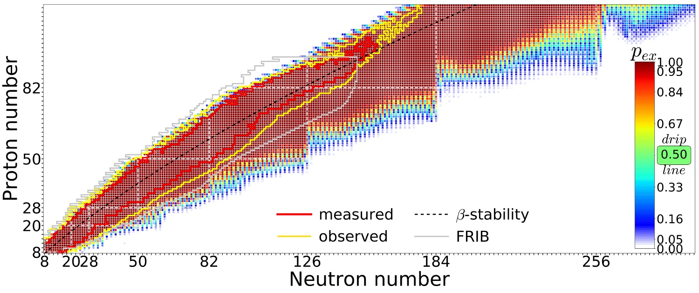

Artificial Intelligence and Machine Learning in Nuclear Physics
University of Tennessee, Knoxville, March 28, 2022
What is this talk about?
The main emphasis is to give you a short and pedestrian introduction to the whys and hows we can use (with several examples) machine learning methods in nuclear physics. And why this could (or should) be of interest.
These slides are at https://mhjensenseminars.github.io/MachineLearningTalk/doc/web/overview.html. Scroll down the page.
- Talk based on Artificial Intelligence and Machine Learning in Nuclear Physics, Amber Boehnlein et al., arXiv:2112.02309 and Reviews Modern of Physics, submitted.
Many folks to thank
Thanks to Jane Kim (MSU), Julie Butler (MSU), Dean Lee (MSU), Witek Nazarewicz (MSU), Vilde Flugsrud (UiO), Even Nordhagen (UiO), Corey Adams (ANL), Bryce Fore (ANL), and Alessandro Lovato (ANL).
A simple perspective on the interface between ML and Physics

ML in Nuclear Physics

AI/ML and some statements you may have heard (and what do they mean?)
- Fei-Fei Li on ImageNet: map out the entire world of objects (The data that transformed AI research)
- Russell and Norvig in their popular textbook: relevant to any intellectual task; it is truly a universal field (Artificial Intelligence, A modern approach)
- Woody Bledsoe puts it more bluntly: in the long run, AI is the only science (quoted in Pamilla McCorduck, Machines who think)
If you wish to have a critical read on AI/ML from a societal point of view, see Kate Crawford's recent text Atlas of AI
Here: with AI/ML we intend a collection of machine learning methods with an emphasis on statistical learning and data analysisScientific Machine Learning
An important and emerging field is what has been dubbed as scientific ML, see the article by Deiana et al Applications and Techniques for Fast Machine Learning in Science, arXiv:2110.13041
The authors discuss applications and techniques for fast machine learning (ML) in science – the concept of integrating power ML methods into the real-time experimental data processing loop to accelerate scientific discovery. The report covers three main areas
- applications for fast ML across a number of scientific domains;
- techniques for training and implementing performant and resource-efficient ML algorithms;
- and computing architectures, platforms, and technologies for deploying these algorithms.
Machine Learning and Physics
Machine learning is an extremely rich field, in spite of its young age. The increases we have seen during the last three decades in computational capabilities have been followed by developments of methods and techniques for analyzing and handling large date sets, relying heavily on statistics, computer science and mathematics. The field is rather new and developing rapidly.
Popular software packages written in Python for ML are
and more. These are all freely available at their respective GitHub sites. They encompass communities of developers in the thousands or more. And the number of code developers and contributors keeps increasing.
Lots of room for creativity
Not all the algorithms and methods can be given a rigorous mathematical justification, opening up thereby for experimenting and trial and error and thereby exciting new developments.
A solid command of linear algebra, multivariate theory, probability theory, statistical data analysis, optimization algorithms, understanding errors and Monte Carlo methods is important in order to understand many of the various algorithms and methods.
Job market, a personal statement: A familiarity with ML is almost becoming a prerequisite for many of the most exciting employment opportunities. And add quantum computing and there you are!
Types of machine learning
The approaches to machine learning are many, but are often split into two main categories. In supervised learning we know the answer to a problem, and let the computer deduce the logic behind it. On the other hand, unsupervised learning is a method for finding patterns and relationship in data sets without any prior knowledge of the system. Some authours also operate with a third category, namely reinforcement learning. This is a paradigm of learning inspired by behavioural psychology, where learning is achieved by trial-and-error, solely from rewards and punishment.
Another way to categorize machine learning tasks is to consider the desired output of a system. Some of the most common tasks are:
- Classification: Outputs are divided into two or more classes. The goal is to produce a model that assigns inputs into one of these classes. An example is to identify digits based on pictures of hand-written ones. Classification is typically supervised learning.
- Regression: Finding a functional relationship between an input data set and a reference data set. The goal is to construct a function that maps input data to continuous output values.
- Clustering: Data are divided into groups with certain common traits, without knowing the different groups beforehand. It is thus a form of unsupervised learning.
Machine learning and nuclear theory: Why?
- ML tools can help us to speed up the scientific process cycle and hence facilitate discoveries
- Enabling fast emulation for big simulations
- Revealing the information content of measured observables w.r.t. theory
- Identifying crucial experimental data for better constraining theory
- Providing meaningful input to applications and planned measurements
- ML tools can help us to reveal the structure of our models
- Parameter estimation with heterogeneous/multi-scale datasets
- Model reduction
- ML tools can help us to provide predictive capability
- Theoretical results often involve ultraviolet and infrared extrapolations due to Hilbert-space truncations
- Uncertainty quantification essential
- Theoretical models are often applied to entirely new nuclear systems and conditions that are not accessible to experiment
The plethora of machine learning algorithms/methods
- Deep learning: Neural Networks (NN), Convolutional NN, Recurrent NN, Boltzmann machines, autoencoders and variational autoencoders and generative adversarial networks
- Bayesian statistics and Bayesian Machine Learning, Bayesian experimental design, Bayesian Regression models, Bayesian neural networks, Gaussian processes and much more
- Dimensionality reduction (Principal component analysis), Clustering Methods and more
- Ensemble Methods, Random forests, bagging and voting methods, gradient boosting approaches
- Linear and logistic regression, Kernel methods, support vector machines and more
- Reinforcement Learning
- and more
Examples of Machine Learning methods and applications in nuclear physics
- Machine learning for data mining: Oftentimes, it is necessary to be able to accurately calculate observables that have not been measured, to supplement the existing databases.
- Nuclear density functional theory: Energy density functional calibration involving Bayesian optimization and NN ML. A promising avenue for ML applications is the emulation of DFT results.
- Nuclear properties with ML: Improving predictive power of nuclear models by emulating model residuals.
- Effective field theory and A-body systems: Truncation errors and low-energy coupling constant calibration, nucleon-nucleon scattering calculations, variational calculations with ANN for light nuclei, NN extrapolation of nuclear structure observables
- Nuclear shell model UQ: ML methods have been used to provide UQ of configuration interaction calculations.
Examples of Machine Learning methods and applications in nuclear physics, continues
- Low-energy nuclear reactions UQ: Bayesian optimization studies of the nucleon-nucleus optical potential, R-matrix analyses, and statistical spatial networks to study patterns in nuclear reaction networks.
- Neutron star properties and nuclear matter equation of state: constraining the equation of state by properties on neutron stars and selected properties of finite nuclei
- Experimental design: Bayesian ML provides a framework to maximize the success of on experiment based on the best information available on existing data, experimental conditions, and theoretical models.
More examples
The large amount of degrees of freedom pertain to both theory and experiment in nuclear physics. With increasingly complicated experiments that produce large amounts data, automated classification of events becomes increasingly important. Here, deep learning methods offer a plethora of interesting research avenues.
- Reconstruction of particle trajectories or classification of events are typical examples where ML methods are being used. However, since these data can often be extremely noisy, the precision necessary for discovery in physics requires algorithmic improvements. Research along such directions, interfacing nuclear physics with AI/ML is expected to play a significant role in physics discoveries related to new facilities. The treatment of corrupted data in imaging and image processing is also a relevant topic.
- Design of detectors represents an important area of applications for ML/AI methods in nuclear physics.
And more
- An important application of AI/ML methods is to improve the estimation of bias or uncertainty due to the introduction of or lack of physical constraints in various theoretical models.
- In theory, we expect to use AI/ML algorithms and methods to improve our knowledge about correlations of physical model parameters in data for quantum many-body systems. Deep learning methods show great promise in circumventing the exploding dimensionalities encountered in quantum mechanical many-body studies.
- Merging a frequentist approach (the standard path in ML theory) with a Bayesian approach, has the potential to infer better probabilitity distributions and error estimates. As an example, methods for fast Monte-Carlo- based Bayesian computation of nuclear density functionals show great promise in providing a better understanding
- Machine Learning and Quantum Computing is a very interesting avenue to explore. See for example talk of Sofia Vallecorsa.
Selected references
- Mehta et al. and Physics Reports (2019).
- Machine Learning and the Physical Sciences by Carleo et al
- Ab initio solution of the many-electron Schrödinger equation with deep neural networks by Pfau et al.
- Report from the A.I. For Nuclear Physics Workshop by Bedaque et al., Eur J. Phys. A 57, (2021)
- Particle Data Group summary on ML methods
- And the BAND collaboration at https://bandframework.github.io/
What are the basic ingredients?
Almost every problem in ML and data science starts with the same ingredients:
- The dataset \( \mathbf{x} \) (could be some observable quantity of the system we are studying)
- A model which is a function of a set of parameters \( \mathbf{\alpha} \) that relates to the dataset, say a likelihood function \( p(\mathbf{x}\vert \mathbf{\alpha}) \) or just a simple model \( f(\mathbf{\alpha}) \)
- A so-called loss/cost/risk function \( \mathcal{C} (\mathbf{x}, f(\mathbf{\alpha})) \) which allows us to decide how well our model represents the dataset.
We seek to minimize the function \( \mathcal{C} (\mathbf{x}, f(\mathbf{\alpha})) \) by finding the parameter values which minimize \( \mathcal{C} \). This leads to various minimization algorithms. It may surprise many, but at the heart of all machine learning algortihms there is an optimization problem.
Unsupervised learning in nuclear physics, Argon-46 by Solli, Bazin, Kuchera, MHJ, Strauss.
Two- and three-dimensional representations of two events from the Argon-46 experiment. Each row is one event in two projections, where the color intensity of each point indicates higher charge values recorded by the detector. The bottom row illustrates a carbon event with a large fraction of noise, while the top row shows a proton event almost free of noise.

Quantum Monte Carlo and deep learning
Given a hamiltonian \( H \) and a trial wave function \( \Psi_T \), the variational principle states that the expectation value of \( \langle H \rangle \), defined through
$$ \langle E \rangle = \frac{\int d\boldsymbol{R}\Psi^{\ast}_T(\boldsymbol{R})H(\boldsymbol{R})\Psi_T(\boldsymbol{R})} {\int d\boldsymbol{R}\Psi^{\ast}_T(\boldsymbol{R})\Psi_T(\boldsymbol{R})}, $$is an upper bound to the ground state energy \( E_0 \) of the hamiltonian \( H \), that is
$$ E_0 \le \langle E \rangle. $$In general, the integrals involved in the calculation of various expectation values are multi-dimensional ones. Traditional integration methods such as the Gauss-Legendre will not be adequate for say the computation of the energy of a many-body system. Basic philosophy: Let a neural network find the optimal wave function
Monte Carlo methods and Neural Networks
Machine Learning and the Deuteron by Kebble and Rios and Variational Monte Carlo calculations of \( A\le 4 \) nuclei with an artificial neural-network correlator ansatz by Adams et al.
Adams et al: $$ \begin{align} H_{LO} &=-\sum_i \frac{{\vec{\nabla}_i^2}}{2m_N} +\sum_{i < j} {\left(C_1 + C_2\, \vec{\sigma_i}\cdot\vec{\sigma_j}\right) e^{-r_{ij}^2\Lambda^2 / 4 }} \nonumber\\ &+D_0 \sum_{i < j < k} \sum_{\text{cyc}} {e^{-\left(r_{ik}^2+r_{ij}^2\right)\Lambda^2/4}}\,, \label{_auto1} \end{align} $$where \( m_N \) is the mass of the nucleon, \( \vec{\sigma_i} \) is the Pauli matrix acting on nucleon \( i \), and \( \sum_{\text{cyc}} \) stands for the cyclic permutation of \( i \), \( j \), and \( k \). The low-energy constants \( C_1 \) and \( C_2 \) are fit to the deuteron binding energy and to the neutron-neutron scattering length
Deep learning neural networks, Variational Monte Carlo calculations of \( A\le 4 \) nuclei with an artificial neural-network correlator ansatz by Adams et al.
An appealing feature of the neural network ansatz is that it is more general than the more conventional product of two- and three-body spin-independent Jastrow functions
$$ \begin{align} |\Psi_V^J \rangle = \prod_{i < j < k} \Big( 1-\sum_{\text{cyc}} u(r_{ij}) u(r_{jk})\Big) \prod_{i < j} f(r_{ij}) | \Phi\rangle\,, \label{_auto2} \end{align} $$which is commonly used for nuclear Hamiltonians that do not contain tensor and spin-orbit terms. The above function is replaced by a four-layer Neural Network.

Gnech et al, Variational Monte Carlo calculations of \( A\le 6 \) nuclei Few Body Systems 63, (2022)

The electron gas in three dimensions with \( N=14 \) electrons
Jane Kim, Bryce Fore, Alessandro Lovato and MHJ, in preparation

Neutron matter with \( N=14 \) neutron
Jane Kim, Bryce Fore, Alessandro Lovato and MHJ, in preparation
Onebody densities \( N=6 \), \( \hbar\omega=0.1 \) a.u.

Onebody densities \( N=30 \), \( \hbar\omega=1.0 \) a.u.

Onebody densities \( N=30 \), \( \hbar\omega=0.1 \) a.u.

Extrapolations and model interpretability
When you hear phrases like predictions and estimations and correlations and causations, what do you think of? May be you think of the difference between classifying new data points and generating new data points. Or perhaps you consider that correlations represent some kind of symmetric statements like if \( A \) is correlated with \( B \), then \( B \) is correlated with \( A \). Causation on the other hand is directional, that is if \( A \) causes \( B \), \( B \) does not necessarily cause \( A \).
Physics based statistical learning and data analysis
The above concepts are in some sense the difference between old-fashioned machine learning and statistics and Bayesian learning. In machine learning and prediction based tasks, we are often interested in developing algorithms that are capable of learning patterns from given data in an automated fashion, and then using these learned patterns to make predictions or assessments of newly given data. In many cases, our primary concern is the quality of the predictions or assessments, and we are less concerned about the underlying patterns that were learned in order to make these predictions.
Physics based statistical learning points however to approaches that give us both predictions and correlations as well as being able to produce error estimates and understand causations. This leads us to the very interesting field of Bayesian statistics.
Bayes' Theorem
Bayes' theorem
$$ p(X\vert Y)= \frac{p(X,Y)}{\sum_{i=0}^{n-1}p(Y\vert X=x_i)p(x_i)}=\frac{p(Y\vert X)p(X)}{\sum_{i=0}^{n-1}p(Y\vert X=x_i)p(x_i)}. $$The quantity \( p(Y\vert X) \) on the right-hand side of the theorem is evaluated for the observed data \( Y \) and can be viewed as a function of the parameter space represented by \( X \). This function is not necessarily normalized and is normally called the likelihood function.
The function \( p(X) \) on the right hand side is called the prior while the function on the left hand side is the called the posterior probability. The denominator on the right hand side serves as a normalization factor for the posterior distribution.
Folding and unfolding and response functions
A good read on folding/unfolding is An Unfolding Method for High Energy Physics Experiments by Volker Blobel
See notebook details and examples of simple data reconstructed with Gaussian processes.
Quantified limits of the nuclear landscape
Neufcourt et al., Phys. Rev. C 101, 044307 (2020)Predictions made with eleven global mass model and Bayesian model averaging

Constraining the equation of state for dense nuclear matter
G. Raaijmakers et al., Constraining the Dense Matter Equation of State with Joint Analysis of NICER and LIGO/Virgo Measurements, AJ Letters, 893, L21 (2020)
Experimental design
Beam time and compute cycles are expensive!
- Bayesian experimental design provides a framework in which experiments can be designed using the best experimental and theoretical information available
- The utility function is designed to encode the goals of the experiment and the constraints inherent in carrying it out.
- Once the utility function and the possible designs have been specified, the optimal design is simply the scenario that maximizes the expected utility function over the domain of possible designs.

Observations (or conclusions if you prefer)
- Need for AI/Machine Learning in nuclear physics, lots of ongoing activities
- To solve many complex problems in the field and facilitate discoveries, multidisciplinary efforts efforts are required involving scientists in nuclear physics, statistics, computational science, and applied math.
- There is a need for focused AI/ML learning efforts that will benefit accelerator science and experimental and theoretical programs
- How do we develop insights, competences, knowledge in statistical learning that can advance our field?
- For example: Can we use ML to find out which correlations are relevant and thereby diminish the dimensionality problem in standard many-body theories?
- Can we use AI/ML in detector analysis, accelerator design, analysis of experimental data and more?
- Can we use AL/ML to carry out reliable extrapolations by using current experimental knowledge and current theoretical models?
- The community needs to invest in relevant educational efforts and training of nuclear physicists with knowledge in AI/ML
- Most likely tons of things we have forgotten
Possible start to raise awareness about ML in our field
- Make an ML challenge in nuclear physics a la Learning to discover: the Higgs boson machine learning challenge. Alternatively go to kaggle.com at https://www.kaggle.com/c/higgs-boson
- HEP@CERN and HEP in general have made significant impacts in the field of machine learning and AI. Something to learn from
Educational initiatives since 2019, FRIB/NSCL (MSU) playing a central role
Please feel free to propose new schools and/or update the list here.- The FRIB-TA Summer School: Machine Learning Applied to Nuclear Physics, FRIB/NSCL (MSU)from May 20 to 23, 2019; organizers and teachers: Matthew Hirn (MSU), Morten Hjorth-Jensen (MSU) and Michelle Kuchera (Davidson)
- Nuclear TALENT course Learning from Data: Bayesian Methods and Machine Learning, in York, UK, June 10-28, 2019; Teachers and organizers Christian Forssén, Chalmers University of Technology, Sweden, Dick Furnstahl, Ohio State University, USA, Daniel Phillips, Ohio University, USA
- Nuclear TALENT School on Machine learning from 22 June 2020 to 03 July 2020. Teachers and organizers: Daniel Bazin (MSU), Morten Hjorth-Jensen (MSU), Michelle Kuchera (Davidson), Sean Liddick (MSU), Raghuram Ramanujan (Davidson)
- Nuclear TALENT School on Machine learning from 19 July 2021 to 30 July 2021. Teachers and organizers: Daniel Bazin (MSU), Morten Hjorth-Jensen (MSU), Michelle Kuchera (Davidson), Sean Liddick (MSU), Raghuram Ramanujan (Davidson)
- Intensive course on Machine Learning at FRIB/MSU, summer 2019; teacher Morten Hjorth-Jensen, MSU
- Four two-week intensive course on Machine Learning for Nuclear Physics held at Ganil, France, 2019, 2020, 2021 and 2022. Teacher and organizer Morten Hjorth-Jensen (MSU)
- AI4NP Winter School, 11-15 Jan 2021, (Virtual). Organizers Amber Boehnlein (JLAB), Paulo Bedaque (University of Maryland), Tanja Horn (Catholic University of America)
- 2022?